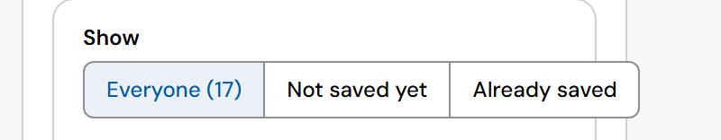
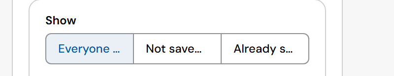
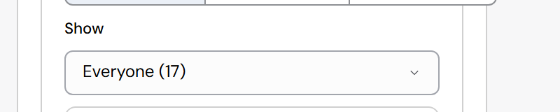
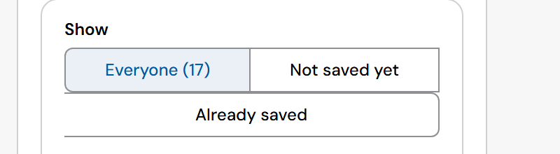
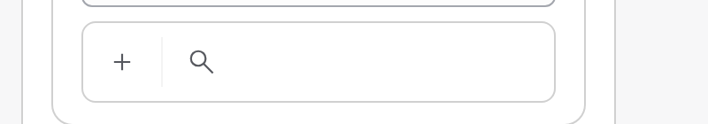

Segmented control in a narrow side panel (#276, with #274)
RedSave's people panel is 360px wide, with a card inside it. Its "Show" control has three options: Everyone (17), Not saved yet, Already saved. The control never shrinks, so the last option runs past the card's edge. The same layout is drawn below with the real Platform components.
Today

The options



#274 · the CommandBar at the same width

What mainstream systems do
- Apple HIG: segmented controls keep short labels and few segments; when they don't fit, use a pop-up button (a menu) instead.
- Material 3: segmented buttons hold 2 to 5 short options; for more or longer choices, use a menu or chips.
- Carbon: the content switcher truncates long labels with an ellipsis.
Recommendation: B. The control measures itself; when its options don't fit, it draws the same choice as a Select (same label, same value, same keyboard rules of a select). Labels stay whole, so counts like "(17)" stay visible, as Apple and Material advise. A loses the counts; C breaks the control's shape. Apps to check: any SegmentedControl in a side panel or a narrow card (RedSave People).